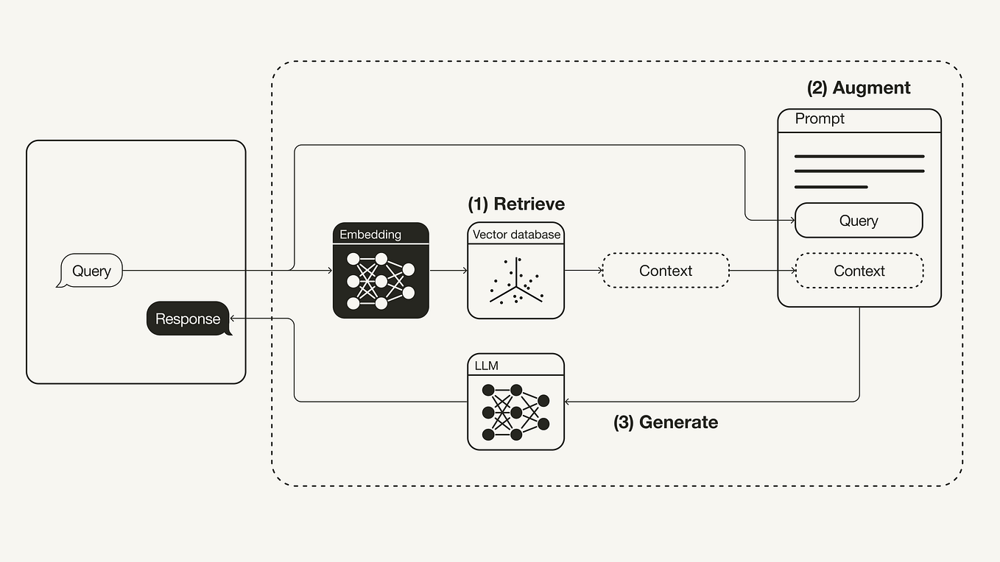
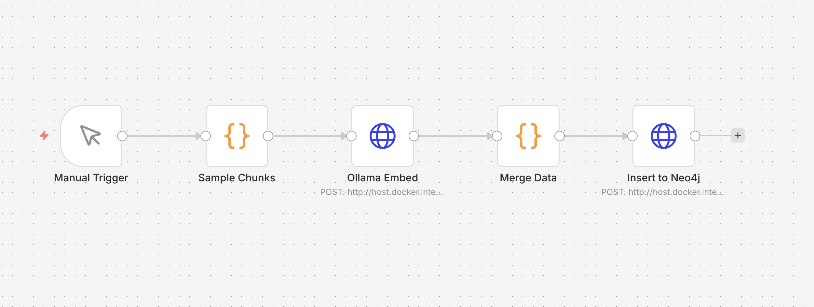
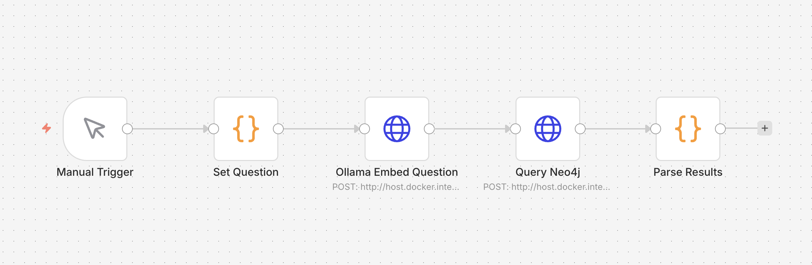
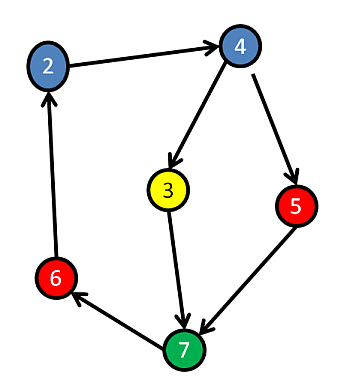
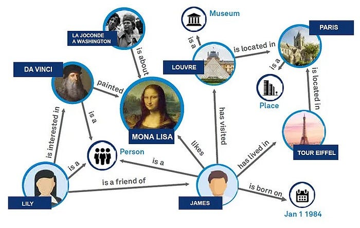
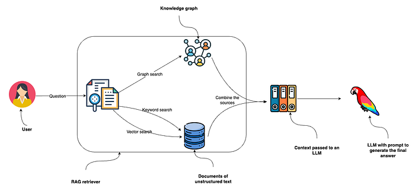

21 October 2026


nomic-embed-text → 768 numbers per textMERGE allows the import to run again
Retrieval finds the context; an LLM call then needs to formulate the answer.
Retrieval can happen at different points in the workflow:
In all three cases, the agent needs both the question and the retrieved sources.



From this wiki text, suggest nodes, node types, relationship types, and properties. For each relationship, include the supporting sentence. Use only information in the text and flag anything uncertain.
Film, Person, Genre(Person)-[:DIRECTED]->(Film)Your task: work through a small sample of your own data. Decide which types and properties to keep, and correct the AI’s suggestions.
neo4j(node)-[:RELATIONSHIP]->(node)Find topics — like selecting rows in SQL:
Follow a relationship — which topics depend on Agents?
DemoTopic is a label that groups this kind of nodename and source are properties with valuesMERGE: find the pattern or create it if it is missingCREATE: creates new data every timeAgents and agentsMATCH describes the pattern we are looking forWHERE filters; RETURN selects the data we get back[:DEPENDS_ON*1..3] follows between one and three hopsChunk.text, Chunk.source, and Chunk.embeddingSave as compose.yml in a new directory:
http://localhost:7474bolt://localhost:7687neo4j; database: neo4j| Where does the service run? | Address from n8n in Docker on Mac/Windows |
|---|---|
| Neo4j on host port 7474 | http://host.docker.internal:7474 |
| Ollama on host port 11434 | http://host.docker.internal:11434 |
| Neo4j in the same Compose network | http://neo4j:7474 |
localhost inside a container refers to the container itselfOpen Wednesday - Graph RAG. Query Graph uses:
topic = AgentsQuestion: which topics depend on Agents?
$topic is the value supplied by n8n: AgentsMATCH finds topics with a path pointing to Agents*1..3 allows one to three steps: Tools is one step away; RAG is twoRETURN DISTINCT returns each topic/source pair onceORDER BY topic sorts the results: RAG, then ToolsLive demo: create an agent, give it instructions, and try it in the chat
The Knowledge tab does not replace the project’s Neo4j retrieval.
Q&A: 28 October, 09–11, in class and on Teams
Submission: 3 November, 23:59, on ItsLearning